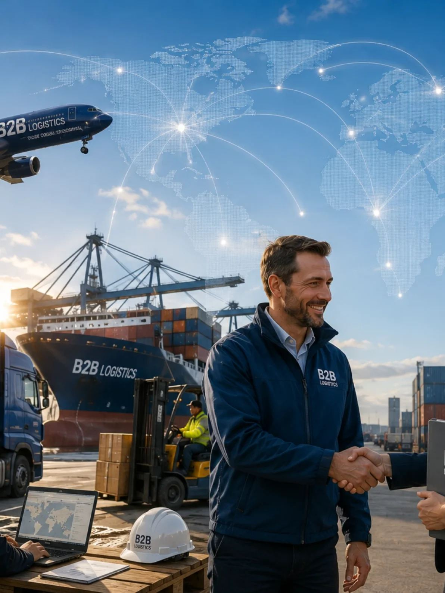

Spedisjon fra Os
Nasjonal og global rekkevidde. Én partner.
Komplette spedisjonsløsninger for luft, sjø, vei og jernbane. Presisjonslogistikk for operasjoner som krever dyktighet – med lokal ekspertise i våre markeder.
Containerstabelen lastes mens du scroller
Tjenester
Omfattende logistikkløsninger
Tilpasset dine operasjonelle krav. Vi setter sammen løsningen etter varene, fristene og destinasjonen.
Sjøfrakt
Container og konsolidering av sjøfrakt for kostnadseffektiv global skipstransport.
02Veitransport
Nasjonal og internasjonal veifrakt – fleksibelt og pålitelig.
03Jernbanefrakt
Bærekraftig transport som forbinder store europeiske og asiatiske handelsruter.
04Flyfrakt
Ekspress- og standard flyfrakt for tidssensitive forsendelser over hele verden.
05Spesialtransport
Tungløft, overdimensjonert gods og prosjektfrakt som krever spesialisert håndtering.
06Tollklarering
Egen tollavdeling og digitale tjenester for sømløs grensepassering.
Hvorfor B2B Logistics
Bygget på kompetanse og tillit
Kunnskap og operasjonell dyktighet er grunnlaget for alt vi gjør.
Etablerte nettverk med lokal ekspertise i våre markeder.
Full oversikt og personlig oppfølging gjennom hele leveransen.
Operasjonell presisjon og sømløs håndtering i alle ledd.
Full synlighet i logistikkflyten – fra booking til levering.

Slik jobber vi
La oss gå gjennom behovet deres
Sammen går vi gjennom hva som skal flyttes, hvor det skal, og hvilke frister som gjelder. Deretter lager vi en løsning som passer operasjonen.
- Én dedikert kontaktperson hos oss.
- Tollklarering i samme hus.
- Sporing fra booking til levering.
- Løsninger for både små og store volumer.
Har dere en forsendelse på vei?
Ring 40 69 33 50 eller send en forespørsel, så ser vi på løsningen sammen.